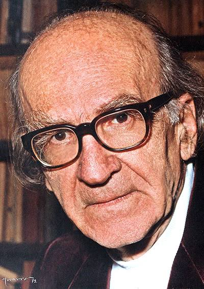
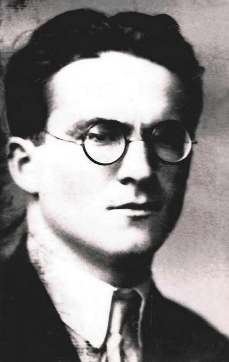
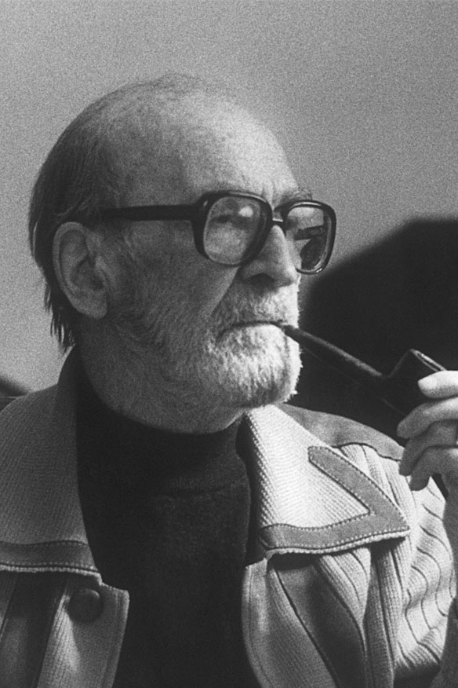
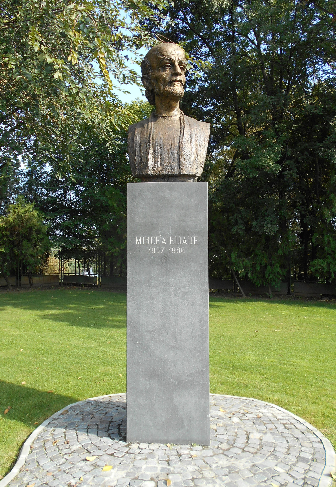

Una dintre cele mai fascinante personalități ale culturii române și universale — un spirit enciclopedic care a unit literatura fantastică, filosofia și istoria religiilor într-o operă nemuritoare.
Descoperă povestea ↓
De la străzile Bucureștiului la mănăstirile din Himalaya și catedrele universitare din Chicago — un destin dedicat cunoașterii absolute.
S-a născut pe 13 martie 1907 la București. Încă din adolescență a demonstrat o curiozitate ieșită din comun, citind enorm și scriind primele sale articole științifice și literare.
Obține o bursă de studii în India, unde studiază filosofia sanscrită și practica yoga sub îndrumarea profesorului Surendranath Dasgupta. Această experiență îi va marca întreaga viață.
Revine în țară și devine liderul „tinerei generații” interbelice. Publică romane de mare succes și activează ca atașat cultural la Londra și Lisabona.
Devine profesor titular la Universitatea din Chicago, fiind considerat cel mai mare istoric al religiilor din secolul XX. Se stinge din viață pe 22 aprilie 1986.

Portret din tinerețe, din perioada studiilor orientale și a afirmării sale literare.

În perioada maturității sale științifice la Universitatea din Chicago.
Savantul aplecat asupra cărților și manuscriselor dedicate mitologiei și literaturii.
Apasă pe butonul de sub hartă pentru a porni călătoria și a urmări traseul lui Mircea Eliade de la București până la Chicago.
Opera sa literară îmbină realismul psihologic cu proza fantastică și mitică. Apasă pe fiecare carte pentru a vedea detalii.
O capodoperă a literaturii române interbelice despre iubirea imposibilă dintre un tânăr european și o tânără indiancă, la granița dintre două civilizații diferite.
Povestea profesorului de pian Gavrilescu, care într-o zi toridă de vară pășește într-un spațiu magic unde timpul curge altfel, simbolizând trecerea dintre viață și moarte.
O atmosferă gotică și misterioasă într-un conac boieresc din câmpia Dunării, unde trecutul și lumea spiritelor bântuie prezentul prin iubire și obsesie.
Mircea Eliade a schimbat modul în care omenirea înțelege miturile, simbolurile și literatura fantastică.
A demonstrat că sacrul nu a dispărut din lumea modernă, ci s-a camuflat în profan — în artă, vise, literatură și gesturile cotidiene ale omului contemporan.
A adus un suflu nou în literatura română, conectând folclorul autohton (mitul Zburătorului, Miorița) cu marile tradiții spirituale ale Orientului.
Deși a trăit în exil, a continuat să scrie literatură exclusiv în limba română, afirmând că „limba română este patria mea”.
„Limba română este patria mea. De aceea, pentru mine, muntele munte se numește, de aceea, pentru mine, iarba iarbă se spune.”
— Mircea Eliade, JurnalNumele și chipul lui Mircea Eliade sunt păstrate vii prin monumente emblematice, școli și instituții culturale din România, Republica Moldova și întreaga lume.

Realizat din bronz patinat și așezat pe un soclu înalt din piatră pe care este gravat numele „MIRCEA ELIADE 1907 1986”, monumentul surprinde expresivitatea și profunzimea gânditorului român.
Astfel de busturi și plăci comemorative se regăsesc atât în Chișinău (în parcul Valea Morilor / lângă instituțiile culturale), cât și în București (pe Bulevardul Dacia, sculptat de Gheorghe Iliescu-Călinești), devenind repere importante ale memoriei culturale românești.
Instituție de prestigiu din capitala României care îi poartă numele și păstrează vie tradiția studiilor umaniste.
Unul dintre cele mai renumite licee din Chișinău, simbol al excelenței educaționale și al culturii românești.
La Universitatea din Chicago a fost instituită catedra onorifică „Mircea Eliade Distinguished Service Professor”.
Numeroase biblioteci, bulevarde, emisiuni filatelice și simpozioane internaționale îi cinstesc memoria.
„Mircea Eliade ne învață că dincolo de lumea obișnuită a fiecărei zile se ascunde mereu o poveste, un simbol și un sens mai profund.”
Realizând acest proiect, am descoperit un autor diferit și captivant, care nu s-a limitat doar la a scrie cărți, ci a căutat să înțeleagă sufletul uman în toate culturile lumii.